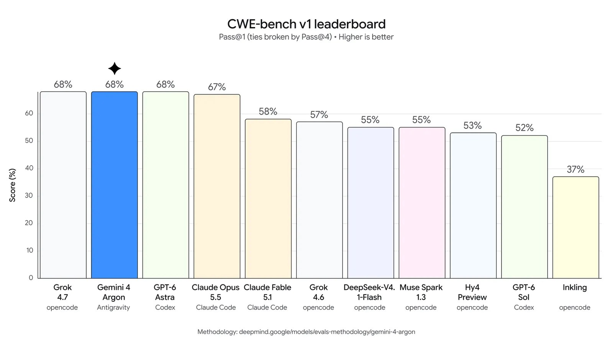

一、导语：一次把「输出上限」和「谁能用」同时改掉的发布
9 月 30 日，Google DeepMind 发布了下一代前沿模型 Gemini 4 Argon。官方给它的定位很具体——真实世界的软件工程、法律与金融这类企业知识工作，以及网络安全防御。但两个最抓眼的数字不在跑分上：输出上限从上一代的 64K token 一举拉到 100 万（1M）；而首发并不面向普通开发者，而是通过 Fairwind 计划，只向「可信网络防御者」开放，并去掉网络安全护栏，让他们用满它的攻防能力。
二、背景分析：前沿模型的竞争，正在变成「能力 + 价格 + 放开节奏」的三重博弈
到 2026 年，单看跑分已经说明不了什么。真正拉开差距的，是模型能不能撑住长任务、单位成本够不够低，以及厂商敢不敢、以什么节奏把最强能力放出去。Gemini 4 Argon 恰好踩在这三点上：1M 的输出上下文意味着它能在一次推理里生成几十万个 token，把过去需要多轮往返才做得完的长链路任务一口气吃下；而「先给防御者、再逐步扩容」的路径，则把安全评估前置成发布的固定环节——Google 明确说，正参与美国政府的自愿性预发布模型评估流程。
换句话说，这次发布的看点不只是模型更强，而是 Google 在给「强能力模型该怎么发」定一个可复制的模板。
三、核心内容：价格、跑分与 Google 自己用出来的成绩
先说钱。Gemini 4 Argon 采用引导价：每百万输入 token 2 美元、每百万输出 token 10 美元，缓存输入再享 95% 折扣。这个价位直接对标同周登场的对手。
再说跑分。官方给出的数字里，最硬的是真实长链路软件工程基准 DeepSWE v1.1，Argon 取得 77.9% 的新 SOTA；在企业知识工作方向的 Vals Index 上领先，Zapier 的 AutomationBench 拿到第一名 51.3%，长视频理解 LVBench 则刷到 91.7%。
更值得看的是 Google 内部已经用它干了什么。量子计算团队用 Argon 优化瓶颈子程序的时空资源，几分钟内就超过公开基线 40%；一组 Argon 智能体分析了全集群的性能剖析数据，自动找到并应用内存优化，上线后释放了超过 300 TiB 内存，预计总节省可达 500 TiB 到 1 PiB。
代码迁移上，Argon 智能体正在把 Google 内部的 C/C++ 代码库往 Rust 搬，小到 re2、libgav1 这类核心库，大到 Fuchsia Zircon 内核的 80 万行以上。以开源视频解码库 libgav1 为例，它接手一个已有的 Rust 版本，替换掉 3.2 万行 SIMD 代码，靠着反复的性能实验和阅读编译器输出，产出能被自动向量化的安全 Rust——最终解码器比原 Rust 版本快 2.7 倍，输出画面完全一致。

网络安全是这次的重头戏。Argon 被专门训练成能自主发现、验证并修补软件漏洞。在评估漏洞修复能力的 CWE-bench v1 上，它拿到并列第一的 68%，图表里与 Grok 4.7 并列，压过 GPT-6 Astra（68%）与 Claude Opus 5.5（67%）。实战侧，安全公司 Wiz 通过其公益项目 Scan for Good 用 Argon 扫描关键公共基础设施，早期就发现了一处影响全球多家医院所用医疗软件的严重漏洞，这是之前的前沿模型漏掉的。它同时官方称为「迄今对间接提示注入最稳健」的模型，在 Gray Swan 的 IPI 基准上领先。
四、各方反应：同周对撞的两条路线
节奏很巧：就在同一周，OpenAI 端出了 GPT-6.1 Sol，主打「以 Astra 五分之一的价格」接近其编码与计算机操作水平，Artificial Analysis 测算其单任务成本较 GPT-6 Sol 低约 30%；Anthropic 的 Claude Sonnet 5.5 则在 Agent Arena 冲上第 3。三家几乎在同一时间把「更强 + 更便宜」摆上台面，前沿模型的商品化速度肉眼可见。
第三方榜单也印证了 Argon 的位置——Gemini 4 Argon（High）进入 Agent Arena 第 8 名，净提升 +7.92%；在 Coding Agent Index 上，它与 Claude Sonnet 5.5、GPT-6.1 Sol 同处头部，只是各自的成本差异被单列出来讨论。
真正引发讨论的是「无护栏网络安全能力」。把能自动挖洞、自动打补丁的模型不加限制地交出去，风险与价值一样大。Google 的答案是把访问权限先圈定在可信防御者范围内，用阶段式放开换取安全验证的时间。
「安全地释放这个级别的前沿能力，需要一个分阶段的方法……我们会持续从早期测试者那里收集反馈，迭代护栏，再尽快把 Argon 开放给开发者、企业和消费者。」
五、深度解读：能力越强，越先给防守方
第一层是分发逻辑的变化。过去前沿模型是「发布即普惠」，谁都能第一时间调用；Argon 反过来，把最强、最危险的那部分能力优先交给网络安全防御者。这大概率会成为高风险能力的标准发放姿势：谁先拿到，取决于用途而不是钱包。
第二层是 Agent 形态的变化。1M 的输出上下文把「一次跑完的超长任务」变成可能，模型自己就能完成过去要靠复杂编排框架拆解的流程——对 LangChain、CrewAI 这类框架而言，机会与压力并存。
第三层是价格。$2/$10 的先导价，加上对手把成本再砍三分之一，说明前沿模型的护城河正在从「模型本身」转向「配套生态、安全体系与分发渠道」。单点更强的窗口期，越来越短。
六、总结
一句话：Gemini 4 Argon 用 100 万输出上下文、$2 的定价和「先给防御者」的开放策略，把 2026 年前沿模型的竞争，从单纯比谁更强，推到了比谁能更安全、更便宜地把强能力放出去。